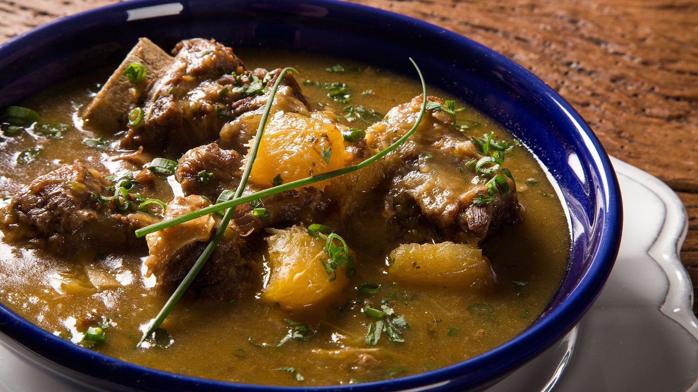
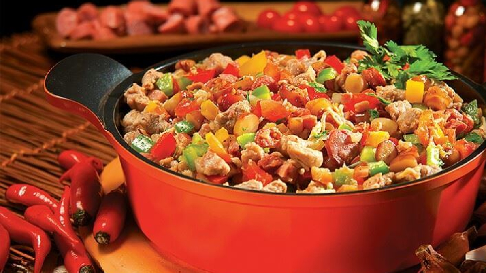

ARROZ CARRETEIRO

MODO DE PREPARO:
Passo a passo:
Dessalgue o charque (deixe de molho por algumas horas, trocando a água, e depois cozinhe até ficar macio). Desfie. Em uma panela grande, aqueça o óleo e doure a cebola e o alho. Acrescente o charque desfiado e frite bem. Adicione o tomate (se quiser) e refogue por mais alguns minutos. Coloque o arroz e misture. Adicione a água quente até cobrir o arroz (cerca de 2 dedos acima). Cozinhe em fogo baixo, com a panela semi-tampada, até a água secar e o arroz cozinhar. Finalize com cheiro-verde
INGREDIENTES
500g de carne seca ou charque dessalgado e desfiado 2 xícaras de arroz 1 cebola picada 2 dentes de alho picados 2 colheres de sopa de óleo ou banha 1 tomate picado (opcional) Cheiro-verde a gosto Sal e pimenta a gosto Água quente (aproximadamente 4 xícaras)
VACA ATOLADA:
INGREDIENTES
1 kg de costela bovina em pedaços 1 kg de mandioca (aipim) descascada e cortada 1 cebola picado 3 dentes de alho picados 1 tomate picado 1 folha de louro Sal e pimenta a gosto Cheiro-verde picado Água quente Óleo ou banha
MODO DE PREPARO:
Em uma panela grande, doure a costela no óleo ou banha até ficar bem selada. Adicione o alho, a cebola, o tomate e refogue até tudo murchar. Tempere com sal, pimenta e louro. Cubra com água quente, tampe a panela e cozinhe por cerca de 40 minutos (ou até a carne ficar macia). Acrescente a mandioca e cozinhe até ela desmanchar parcialmente, engrossando o caldo. Finalize com cheiro-verde e sirva bem quente.
ENTREVEIRO
INGREDIENTES
300 g de carne bovina (alcatra ou coxão mole) em tiras 300 g de frango (sobrecoxa desossada ou peito) em cubos 200 g de linguiça calabresa em rodelas 1 cebola em tiras 1 pimentão (verde, vermelho ou amarelo) em tiras 2 dentes de alho picados 2 tomates picados 1 batata-doce ou batata comum cozida em cubos (opcional) Sal, pimenta e chimichurri a gosto Cheiro-verde Óleo ou banha
MODO DE PREPARO
Aqueça uma disco grande e doure as carnes (comece pelas mais duras, como a bovina, depois o frango e a linguiça). Acrescente o alho, a cebola, os pimentões e refogue. Adicione os tomates, tempere com sal, pimenta e chimichurri. Se quiser, junte as batatas cozidas no final para dar mais sustância. Cozinhe até tudo estar bem integrado e suculento. Finalize com cheiro-verde e sirva com arroz ou pão.